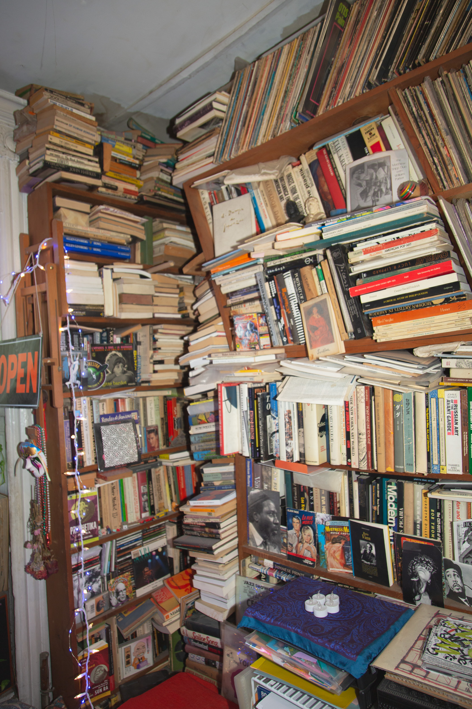

W.A. Jones — Apartmento Series
YUKO
A life measured not in years but in volumes — every wall a spine, every room a sentence left unfinished.

No. 05 / 08
A life measured not in years but in volumes — every wall a spine, every room a sentence left unfinished.



"The accumulation is not disorder — it is memory given mass, argument made physical."
Ezra Pound. Jack Kerouac. Anna Akhmatova. Anne Waldman. The spines read like a syllabus for a school that never existed — or perhaps the only one that mattered.

Between the brushes and the hanging garments, between the notebooks stacked floor to ceiling — she stands at a threshold she has clearly crossed ten thousand times, and still pauses.